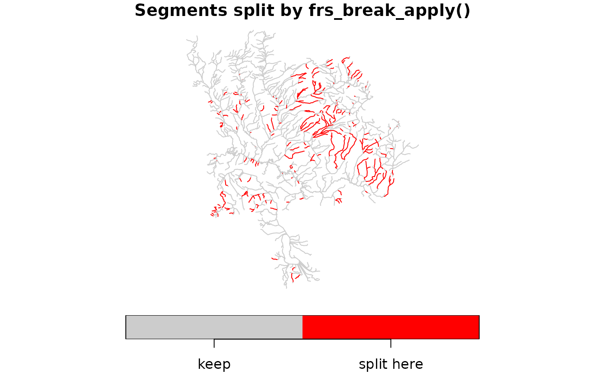

Split stream segments in a working table at break point locations using
ST_LocateBetween() (PostGIS linear referencing). This follows the
bcfishpass break_streams() pattern: shorten original segments and insert
new segments at the break measures.
Arguments
- conn
A DBI::DBIConnection object (from
frs_db_conn()).- table
Character. Working schema table to split (from
frs_extract()).- breaks
Character. Table name containing break points with
blue_line_keyanddownstream_route_measurecolumns (fromfrs_break_find()).- segment_id
Character. Column name used as the segment identifier in
table. Default"linear_feature_id"(FWA base table). Use"segmented_stream_id"for bcfishpass tables.
See also
Other habitat:
frs_aggregate(),
frs_break(),
frs_break_find(),
frs_break_validate(),
frs_categorize(),
frs_classify(),
frs_col_generate(),
frs_col_join(),
frs_extract(),
frs_habitat(),
frs_habitat_access(),
frs_habitat_classify(),
frs_habitat_partition(),
frs_habitat_species(),
frs_network_segment()
Examples
# --- Before vs after breaking (bundled data) ---
d <- readRDS(system.file("extdata", "byman_ailport.rds", package = "fresh"))
streams <- d$streams
# Visualize: segments that would be split at gradient > 8%
steep <- !is.na(streams$gradient) & streams$gradient > 0.08
streams$would_break <- ifelse(steep, "split here", "keep")
message(sum(steep), " of ", nrow(streams), " segments would be split")
#> 259 of 2167 segments would be split
plot(streams["would_break"],
main = "Segments split by frs_break_apply()",
pal = c("grey80", "red"), key.pos = 1)

if (FALSE) { # \dontrun{
# --- Live DB: copy-paste to see before/after ---
conn <- frs_db_conn()
aoi <- d$aoi
# 1. Extract FWA base streams to working schema
conn |> frs_extract(
from = "whse_basemapping.fwa_stream_networks_sp",
to = "working.demo_break",
cols = c("linear_feature_id", "blue_line_key",
"downstream_route_measure", "upstream_route_measure",
"gradient", "geom"),
aoi = aoi, overwrite = TRUE)
# 2. Plot BEFORE
before <- frs_db_query(conn,
"SELECT gradient, geom FROM working.demo_break")
plot(before["gradient"], main = paste("Before:", nrow(before), "segments"))
# 3. Convert to generated columns — gradient auto-recomputes after break
conn |> frs_col_generate("working.demo_break")
# 4. Break where gradient > 8% (sampled at 100m intervals)
conn |> frs_break("working.demo_break",
attribute = "gradient", threshold = 0.08)
# 5. Plot AFTER — more segments, gradient recomputed per sub-segment
after <- frs_db_query(conn,
"SELECT gradient, geom FROM working.demo_break")
plot(after["gradient"],
main = paste("After:", nrow(after), "segments (+",
nrow(after) - nrow(before), "from breaks)"))
# Clean up
DBI::dbExecute(conn, "DROP TABLE IF EXISTS working.demo_break")
DBI::dbExecute(conn, "DROP TABLE IF EXISTS working.breaks")
DBI::dbDisconnect(conn)
} # }